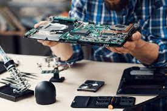
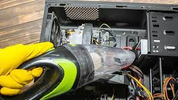
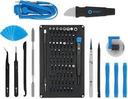

Transformando Ideas en Innovación
Entendemos la cantidad de opciones y alternativas disponibles cuando se trata de arreglar una computadora. Permítanos facilitar su elección brindándole consejos expertos, para que pueda seleccionar el sistema adecuado para sus necesidades.
AYUDATE CON ESTA PAGINA
Aqui tienes algunos tips para que te ayudes en casa si tienes problemas con tu PC
EN CASO DE QUE NO ENCIENDA TU PC
Reinicia tu computadora:
A veces, simplemente reiniciar la computadora puede resolver problemas temporales.Verifica conexiones:
Asegúrate de que todos los cables estén conectados correctamente, especialmente si tu problema está relacionado con hardware.Verifica la fuente de alimentación:
Si tienes problemas con la alimentación, asegúrate de que la fuente de alimentación esté conectada y funcionando correctamente.Revisa el cableado del hardware:
Si es un problema de hardware, asegúrate de que todos los componentes estén conectados adecuadamente. Puedes intentar volver a enchufar o reconectar cables.Inicia en Modo Seguro:
Reinicia tu computadora en Modo Seguro para ver si el problema persiste. Esto ayuda a determinar si el problema está relacionado con algún software o controlador reciente.Desconecta dispositivos externos:
Desconecta todos los dispositivos externos (como unidades USB, impresoras, etc.) y verifica si el problema persiste. Algunas veces, los problemas provienen de dispositivos externos.Actualiza controladores:
Asegúrate de que los controladores de tus dispositivos estén actualizados. Puedes hacer esto a través del Administrador de dispositivos en Windows o Utilidad de discos en macOS.Escanea en busca de malware:
Realiza un escaneo completo en busca de malware y virus utilizando tu software antivirus.Restaura a un punto anterior (solo Windows):
Si estás en Windows, considera restaurar tu sistema a un punto anterior en el tiempo cuando todo funcionaba correctamente.Verifica el espacio en disco:
Asegúrate de tener suficiente espacio en disco disponible. La falta de espacio en disco puede causar problemas de rendimiento.COMO PUEDES HACER UNA COPIA DE SEGURUIDAD
Copia de Seguridad:
Realizar copias de seguridad regularmente es esencial para proteger tus datos en caso de problemas con tu computadora.
Identifica tus datos importantes
Haz una lista de los archivos y datos críticos que no puedes perder, como documentos importantes, fotos, videos, y archivos de configuración.
Selecciona una solución de copia de seguridad
Utiliza una solución confiable para realizar copias de seguridad. Puedes elegir entre herramientas integradas en el sistema operativo, servicios en la nube o programas de terceros.
Copia de seguridad en la nube
Considera utilizar servicios en la nube como Google Drive, Dropbox, OneDrive o servicios especializados en copias de seguridad como Backblaze. Estos servicios suelen proporcionar almacenamiento seguro y accesible desde cualquier lugar.
Copia de seguridad externa
Utiliza dispositivos de almacenamiento externo, como discos duros externos o unidades flash. Asegúrate de desconectar estos dispositivos después de hacer la copia de seguridad para evitar la pérdida de datos debido a eventos como malware o ransomware.
Programa copias de seguridad automáticas
Configura copias de seguridad automáticas para que se realicen regularmente. Esto garantizará que tus datos estén siempre respaldados sin que tengas que recordarlo manualmente.
Realiza copias de seguridad completas e incrementales
Realiza copias de seguridad completas periódicamente y, entre ellas, realiza copias de seguridad incrementales que solo respaldan los cambios desde la última copia de seguridad completa. Esto reduce el tiempo y espacio necesario para cada copia de seguridad.
Verifica tus copias de seguridad
Asegúrate de que las copias de seguridad se estén realizando correctamente y de vez en cuando verifica si puedes restaurar datos desde ellas.
Cifra tus copias de seguridad
Si tus datos son sensibles, considera cifrar tus copias de seguridad para garantizar la seguridad adicional de la información.
Mantén una copia de seguridad fuera del sitio
Si es posible, guarda una copia de seguridad fuera del sitio (fuera de tu ubicación física) para protegerte contra desastres naturales o pérdida total del equipo.
Actualiza tu copia de seguridad después de cambios importantes
Después de realizar cambios significativos en tus datos, asegúrate de actualizar tu copia de seguridad para reflejar los últimos cambios.
Instalación de Windows
Requisitos de windows
Antes de comenzar, asegúrate de que tu sistema cumple con los siguientes requisitos:
- Procesador de 1 GHz o más rápido.
- 1 GB de RAM para sistemas de 32 bits o 2 GB de RAM para sistemas de 64 bits.
- 16 GB de espacio en disco para sistemas de 32 bits o 20 GB de espacio en disco para sistemas de 64 bits.
- Una tarjeta gráfica compatible con DirectX 9 o posterior con un controlador WDDM 1.0.
Pasos para Instalar Windows 10 desde un USB:
1. Descarga la herramienta de creación de medios desde el sitio web oficial de Microsoft.
2. Ejecuta la herramienta y elige "Crear un medio de instalación para otro equipo".
3. Selecciona el idioma, la edición y la arquitectura de Windows 10 que deseas instalar. Luego, elige "Siguiente".
4. Selecciona "Unidad flash USB" como el tipo de medio y sigue las instrucciones para crear el USB de instalación.
5. Inserta la unidad flash USB en la computadora en la que deseas instalar Windows 10.
6. Reinicia la computadora e inicia desde la unidad flash USB. Puedes necesitar cambiar la configuración de arranque en la BIOS/UEFI.
7. Sigue las instrucciones en pantalla para seleccionar el idioma, la hora y el formato de teclado. Luego, elige "Instalar ahora".
8. Ingresa la clave de producto cuando se te solicite (o elige "No tengo una clave de producto" si estás actualizando desde una versión anterior de Windows).
9. Selecciona la edición de Windows 10 que deseas instalar y acepta los términos de la licencia. Luego, elige "Siguiente".
10. Selecciona "Personalizada: Instalar solo Windows (avanzado)".
11. Selecciona la partición en la que deseas instalar Windows 10 y elige "Siguiente". Si necesitas crear o modificar particiones, puedes hacerlo en este paso.
12. Espera a que se complete la instalación. La computadora se reiniciará varias veces durante este proceso.
13. Configura tu cuenta de usuario, preferencias de configuración y otras opciones cuando se te solicite.
14. ¡Felicidades! Has completado la instalación de Windows 10.
Limpieza Básica y Mejor Rendimiento

1. Limpieza Exterior:
Limpia el exterior de tu computadora con un paño suave y seco. Evita el uso de líquidos directamente sobre la computadora.
2. Limpieza del Teclado y Ratón:
Utiliza aire comprimido para eliminar el polvo y las partículas entre las teclas del teclado. Limpia la superficie del ratón con un paño suave y húmedo.
3. Limpieza de la Pantalla:
Limpia la pantalla con un paño de microfibra. Puedes humedecer ligeramente el paño con una solución de limpieza para pantallas.
4. Limpieza del Interior:
Apaga la computadora y desconéctala de la corriente. Utiliza aire comprimido para limpiar el polvo del interior, especialmente alrededor de ventiladores y disipadores de calor.
5. Actualización de Software:
Mantén tu sistema operativo, antivirus y otros programas actualizados. Las actualizaciones de software a menudo incluyen mejoras de seguridad y rendimiento.
6. Desfragmentación del Disco (solo Windows):
Realiza una desfragmentación del disco si estás utilizando Windows. Esto puede mejorar el rendimiento del disco duro.
7. Eliminación de Programas Innecesarios:
Desinstala programas que no necesitas para liberar espacio en el disco y mejorar el rendimiento.
8. Escaneo en busca de Malware:
Realiza escaneos periódicos en busca de malware y virus utilizando tu software antivirus.
9. Respaldo de Datos:
Realiza copias de seguridad periódicas de tus datos importantes en caso de fallos en el hardware o pérdida de información.
10. Organización de Archivos:
Mantén tus archivos organizados en carpetas. Elimina archivos temporales y duplicados para liberar espacio.
11. Monitoreo de Temperaturas:
Utiliza herramientas de monitoreo para verificar las temperaturas de la CPU y GPU. Si son demasiado altas, considera limpiar los ventiladores o mejorar la refrigeración.
12. Actualización de Controladores:
Asegúrate de tener los controladores más recientes para tus componentes, como tarjeta gráfica, sonido y red.
13. Optimización de Inicio:
Revisa y desactiva programas innecesarios que se inician con el sistema para acelerar el proceso de arranque.
14. Revisión de Hardware:
Verifica físicamente si todos los componentes están en buen estado y conectados correctamente.
Herramientas Necesarias
Aire Comprimido: Para eliminar polvo del interior de la PC
Destornilladores: Para abrir el chasis de la PC
Pincel Antiestático: Para limpiar componentes internos
Bandejas de Limpieza: Para limpiar tarjetas de circuitos
Correa Antiestática: Para prevenir descargas estáticas
Guantes Antiestáticos: Para evitar acumulación de electricidad estática
Franela o paño suave: Para limpiar el exterior de la PC
Recuerda seguir las prácticas de seguridad adecuadas al manipular hardware y software, y asegúrate de estar familiarizado con los procedimientos antes de realizar cualquier tarea en tu PC.
.Links
MIRA ESTE VIDEO Y AYUDATE
CONTACTATE